← dashboard · hammer-nail · place demo
ASPIRE-style deployment: typed S2 verbs compose episode specs; a batched runner executes fresh co-sim episodes (~20 s each); benchmark graders (HandsOn + DexJoCo success functions) score; a simulation search (clip × spawn-yaw grid, then measured-calibration retries) finds working parameters; winners are committed to the Atlas. Updated 2026-11-20 12:04.
| episode | task | result | metrics |
|---|---|---|---|
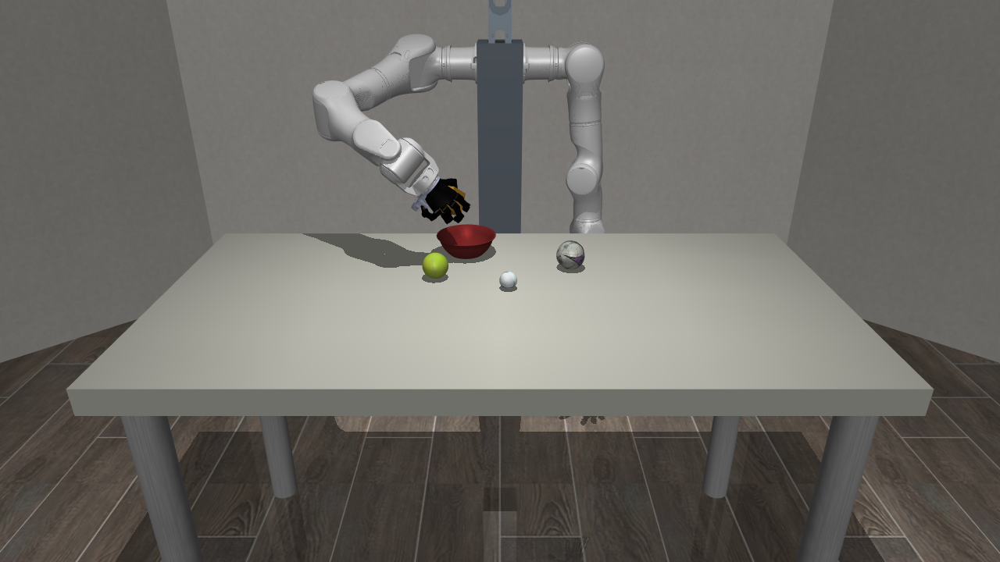 | place_box60 place_in_bowl · box60_local_mocap s2probes_vsweep-s3of4-ss0of2/box60_local_mocap/box60_base_pick_yp135 | PASS · seeds 2/3 | lifted=1, held_frac=0.44, obj_bowl_xy_mm=1.54, obj_z_max=1.05 |
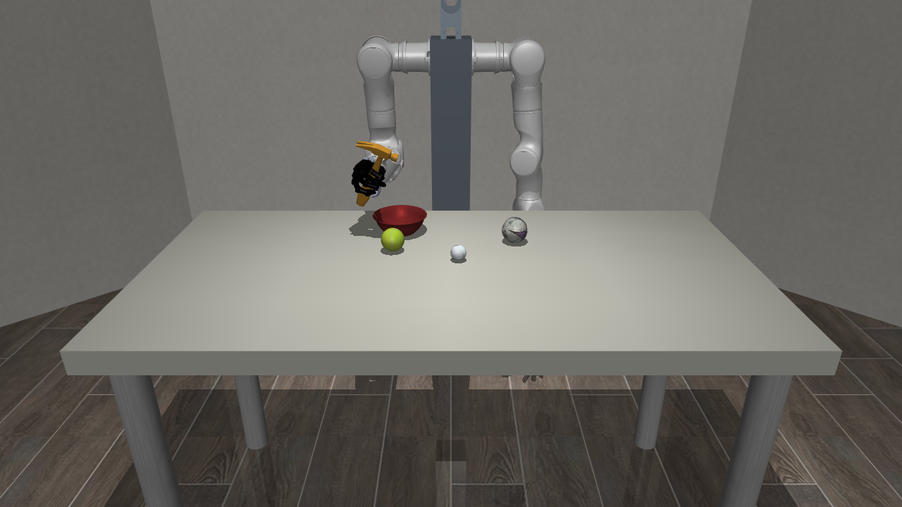 | place_hammerS place_in_bowl · hammerS_local_mocap | PASS · seeds 2/3 | lifted=1, held_frac=0.45, obj_bowl_xy_mm=4.26, obj_z_max=1.02 |
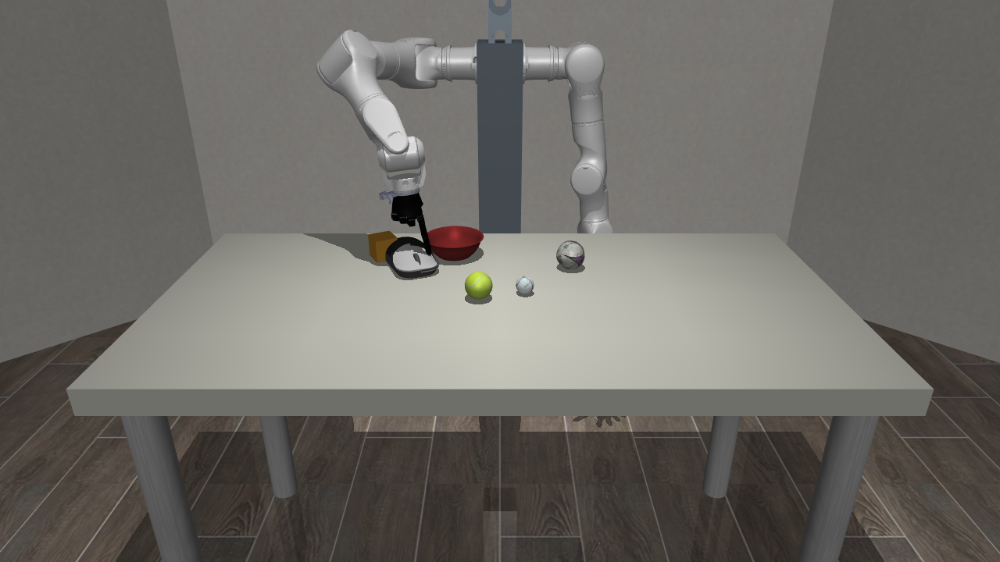 | press_mouse click_mouse_press · mouse_button | PASS · seeds 3/3 | btn_travel_mm=10.62 |
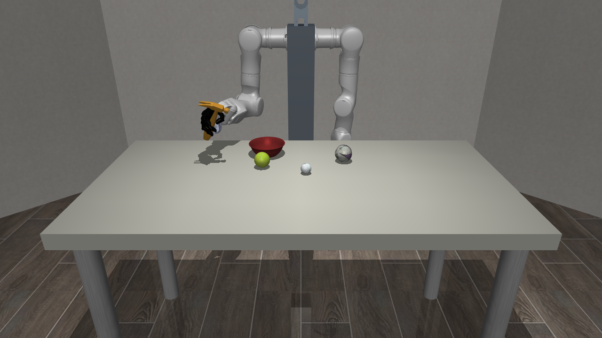 | spin_hammerS in_hand_spin · hammerS_local_mocap | PASS · seeds 3/3 | spin_deg_achieved=61.02, held_frac=0.47 |
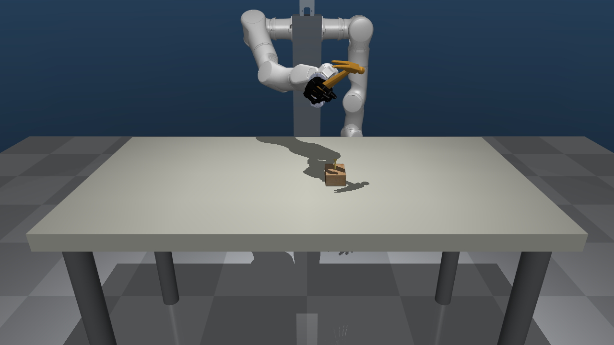 | strike_t08_hammerS hammer_nail_strike · hammerS_local_mocap | PASS · seeds 2/3 | nail_drove_mm=6.17, lifted=1, held_frac=0.64 |
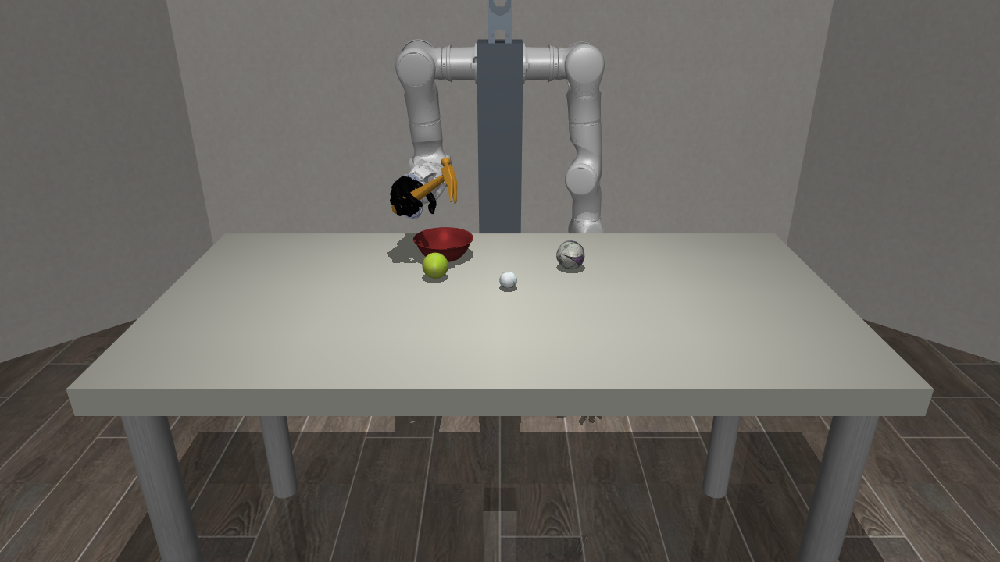 | v25_place_hammerS place_in_bowl (ENGINE=v25) · hammerS_local_mocap | PASS · seeds 3/3 | obj_bowl_xy_mm=43, engine=v25 |
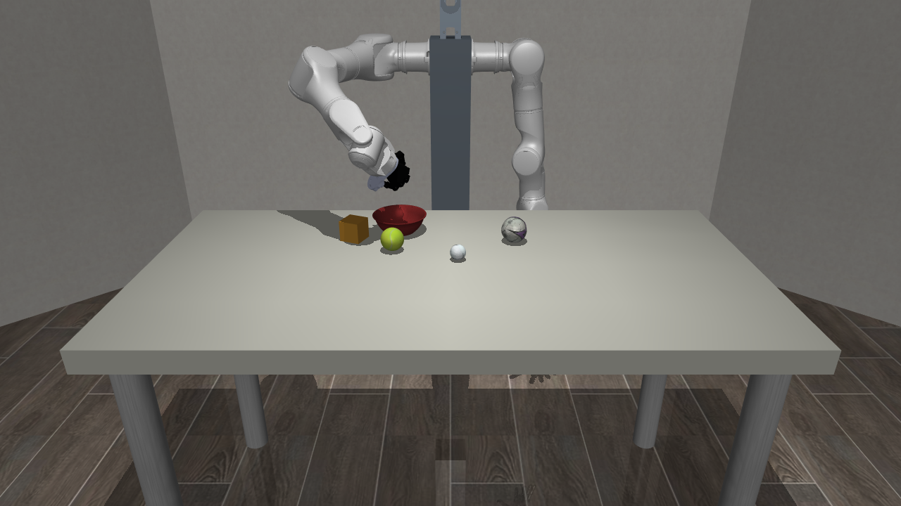 | place_box60_local_mocap place_in_bowl · box60_local_mocap s2probes_vsweep-s1of4-ss0of2/box60_local_mocap/box60_base_pick_yp045 | CAPTURE_MISSED | lifted=0, held_frac=0.0, obj_bowl_xy_mm=139.77, obj_z_max=0.92 |
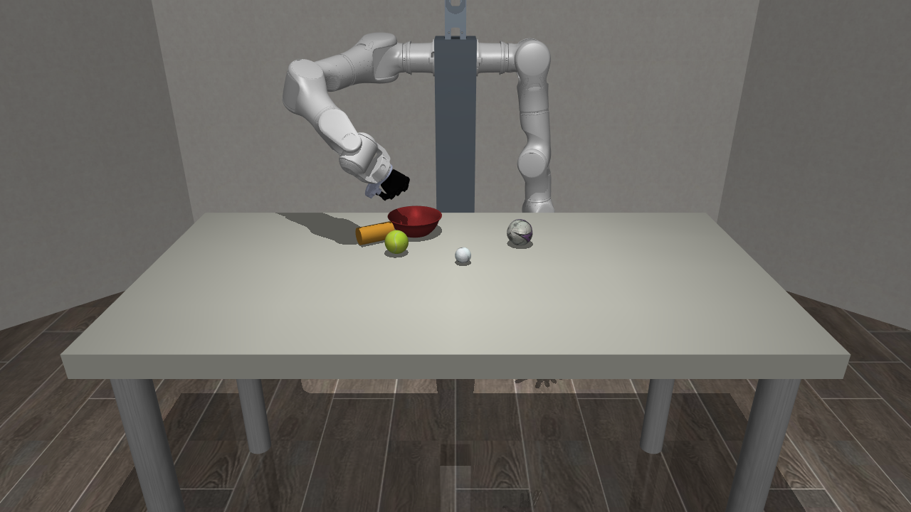 | place_cyl50x100_local_mocap place_in_bowl · cyl50x100_local_mocap s2probes_vsweep-s0of4-ss0of2/cyl50x100_local_mocap/cyl50x100_lying_pick_yn090 | CAPTURE_MISSED | lifted=0, held_frac=0.0, obj_bowl_xy_mm=127.98, obj_z_max=0.92 |
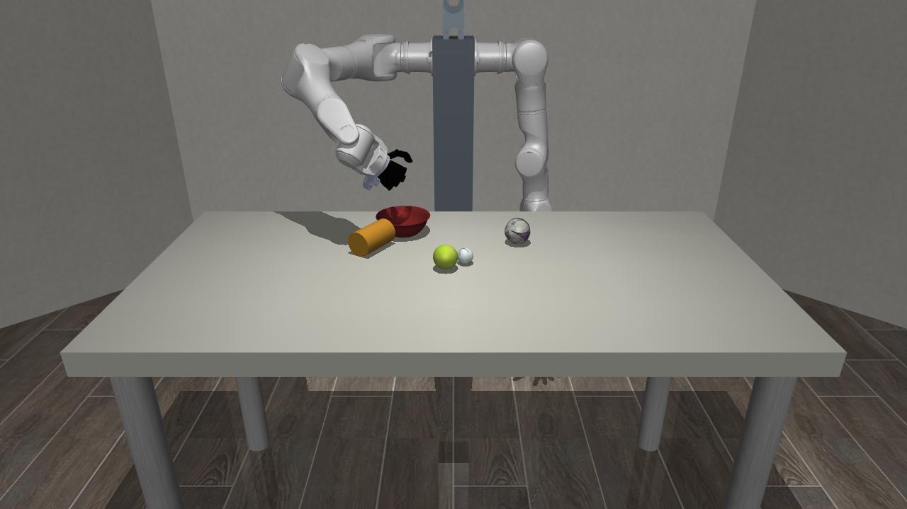 | place_cyl70x120_local_mocap place_in_bowl · cyl70x120_local_mocap s2probes_vsweep-s0of4-ss1of2/cyl70x120_local_mocap/cyl70x120_lying_pick_yp000 | CAPTURE_MISSED | lifted=0, held_frac=0.0, obj_bowl_xy_mm=142.66, obj_z_max=0.93 |
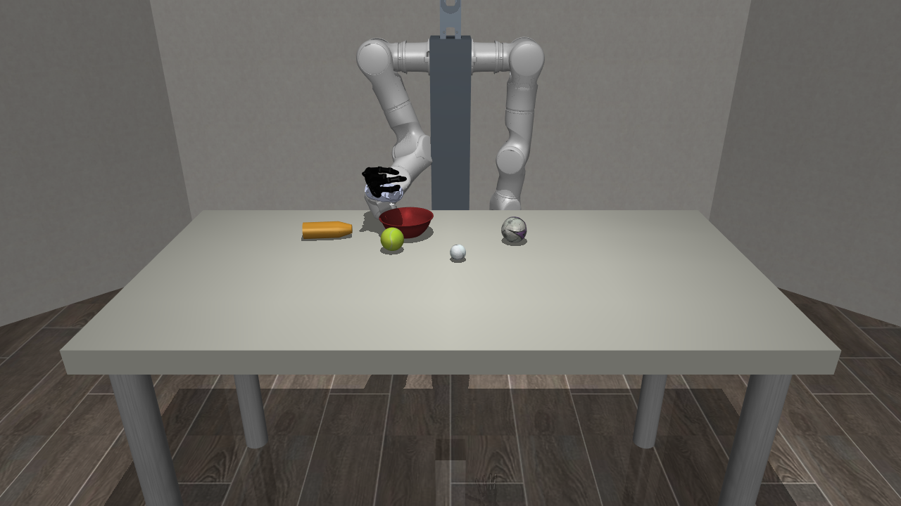 | place_dengpao48h138_local_mocap place_in_bowl · dengpao48h138_local_mocap s2probes_short-s4of11/dengpao48h138_local_mocap/bulb_y150 | CAPTURE_MISSED | lifted=0, held_frac=0.0, obj_bowl_xy_mm=258.36, obj_z_max=0.91 |
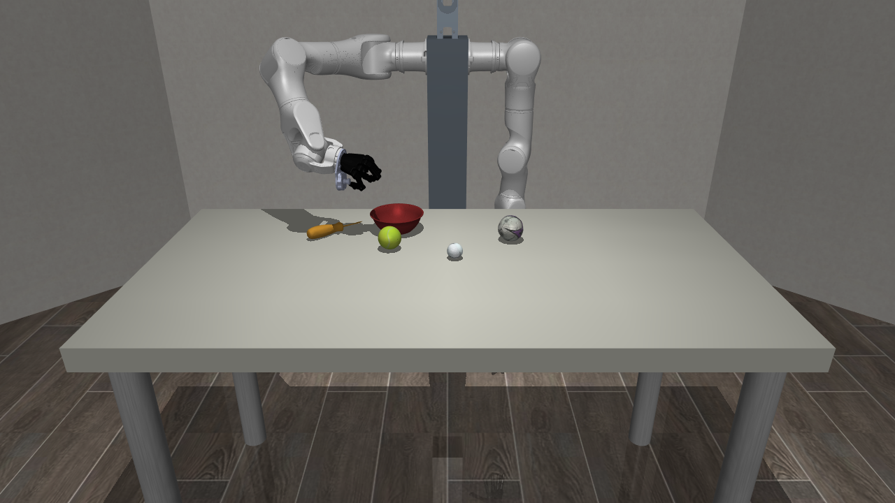 | place_screw_local_mocap place_in_bowl · screw_local_mocap s2probes_short-s0of11/screw_local_mocap/screw_y045 | CAPTURE_MISSED | lifted=0, held_frac=0.0, obj_bowl_xy_mm=218.65, obj_z_max=0.91 |
The co-sim is now engine-selectable (ENGINE=v25): the V25 AUTO3 CFPM Mixed
checkpoint (m39999, Object-only 76.5%/63.5% native) runs through the same mirror/arm machinery, with
Local64 surface banks generated locally for V21 objects. V25 reproduces the hammerS place
(IN_BOWL, 43 mm) and captures two objects m8000 never could (cyl50x100, screw — lifted, then
dropped during the composed carry; carry-retention under V25 is the open item). Bimanual (left-mirror
+ dual shared-object) reproduced locally through the production deployment transport: all five sims track
the full 2219-frame clip with 100% of frames within 5 cm/45° (right 0.95/2.76 cm mean/max;
left 0.98/2.75; dual 0.88/2.01 Full, 0.94/1.92 Object-only) — a capability the previous checkpoint does not
have at all. Honest A/B nuance: m8000 currently spins better in-hand (61° vs 29°) and the
m8000-calibrated strike parameters miss under V25 (engine-specific recalibration needed).
Four probe-clip objects (upright cylinders, bulb, screw) resist capture across clip×yaw grids, accumulated offset calibration, and online calibration — the same thin/upright top-grasp class as the 25 mm ball: the native references carry n=1 margins that do not survive the arm-mounted transfer. Recorded as atlas boundary cells.
| object | variants | best | metrics |
|---|---|---|---|
| screw_local_mocap | 3 planned / 9 run | CAPTURE_MISSED | {'lifted': False, 'held_frac': 0.0, 'obj_bowl_xy_mm': 107.47182757179768, 'obj_z_max': 0.9131770894568739} |
| cyl50x100_local_mocap | 3 planned / 9 run | CAPTURE_MISSED | {'lifted': False, 'held_frac': 0.0, 'obj_bowl_xy_mm': 92.53833701245755, 'obj_z_max': 0.9238215112530201} |
| dengpao48h138_local_mocap | 3 planned / 9 run | CAPTURE_MISSED | {'lifted': False, 'held_frac': 0.0, 'obj_bowl_xy_mm': 181.73068268162885, 'obj_z_max': 0.9145581655517917} |
| cyl70x120_local_mocap | 3 planned / 9 run | CAPTURE_MISSED | {'lifted': False, 'held_frac': 0.0, 'obj_bowl_xy_mm': 119.95439867734387, 'obj_z_max': 0.03497890525028589} |
| box60_local_mocap | 3 planned / 6 run | PASS | {'lifted': True, 'held_frac': 0.44005847953216376, 'obj_bowl_xy_mm': 1.5426831629530238, 'obj_z_max': 1.0499197019414166} |
Harness: s2/dexharness/ (scenes · sweep · episode · verbs · graders ·
search · campaign). Engine: handson_bridge/cosim.py (closed-loop S0 co-sim).
Pattern reference: ASPIRE (s2/ASPIRE) batch validation / skill-refinement loop.